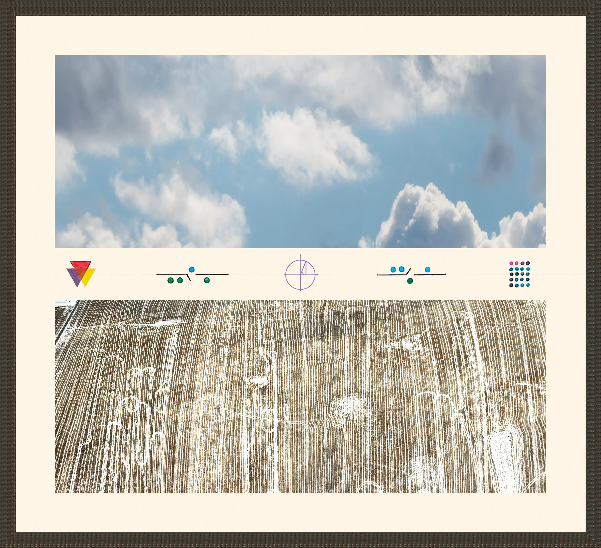
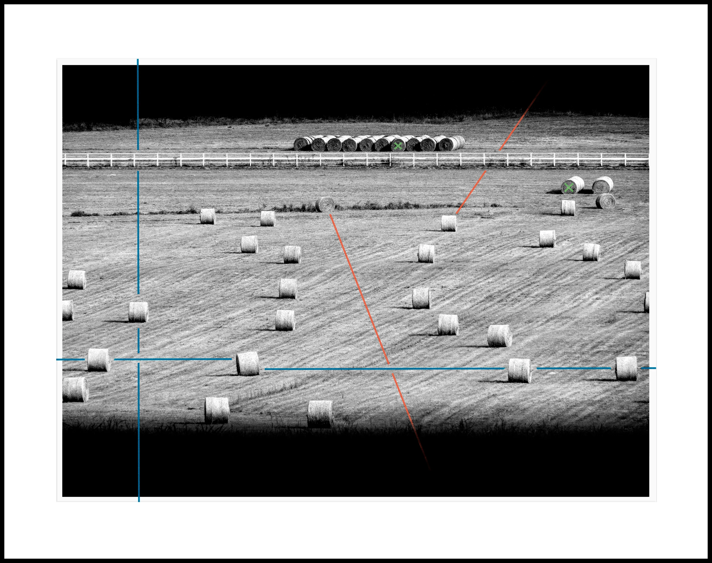

.webp)
Network of Bales (after Duchamp)
©2024. 32" x 24" Archival Print with pastel, ink marker and pencil.
Twenty-some years ago, I visited the MoMA in New York. I saw a magnificent painting by Marcel Duchamp titled Network of Stoppages. The image took up permanent residence in my brain. It has influenced my work and informed how I think about art. Network of Bales is an expression of my continuing amazement and gratitude.
obscuritas gratia hilaritatis - bale symbols: s AC:A0:73: 3E:76:3C

Field Theory #1

Field Theory #2

Field Theory #3

Field Theory #4

Earth, Sky, Mortals, Divinities
.webp)
(yellow-red, yellow-black)
 of Bales + Outliers.webp)
Networks(s) of Bales + Outliers

after/because

how

calculating area
artist’s bio
Maurice Konkle is a recommitted artist living in Fayetteville, Arkansas. His art story began over 40 years ago.
As an undergraduate, he studied philosophy, mathematics, and physics, while devoting much of his time to photography and filmmaking. His visual development continued during graduate studies in philosophy at the University of Washington, where he earned a master’s degree. After graduate school, his focus shifted to business and family. He went on to work in several computer and technical arts companies, serving as Executive Vice President of the pioneering computer database company Cipher, Executive Producer of award-winning television commercials at Celluloid Studios, and COO of the internationally acclaimed video game company Oddworld Inhabitants.
In recent years, he has returned to his art practice. His work has been exhibited in galleries and public spaces in Northwest Arkansas.
artist’s statement(s)
— I have written bunches of statements for various exhibits. I have fun with them. They are opportunity to say what I mean and attempt to be clever.
———
There’s what can be seen and there’s other stuff. Wondering is part bewilderment, part bliss.
———
Art causes wonder.
Wonder as experience (beauty, delight, sadness, confusion, …)
Wonder as question (why? why in the world? what for? …)
Wondering is bewilderment.
And bliss.
———
When I look, intentionally, at a work of art I experience “wonder”. The word describes my awe that such a thing was ever created and my surprise at the sense of beauty it engenders. The wonder contains the pleasure of my uncertainties about the artwork’s point-of-view and illuminates my own worldview. There is bliss in this wondering.
mk@mkok.art